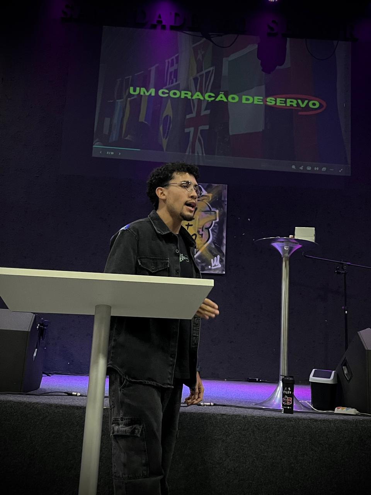

QUEM SOU?
OLÁ, ME CHAMO RONE BATISTA

Tenho 21 anos, sou estudante de tecnologia e atuo na área do esporte. Cresci em família cristã, porém até os meus 18 anos eu conhecia somente a história de Jesus, mas não conhecia o Jesus da história. Foi então que, através de um convite de um amigo, pude conhecer verdadeiramente Cristo, e desde então, a minha paixão pelo Teu nome vem sendo edificada e amadurecida a cada etapa.
Minha Jornada em Fotos